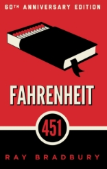

DUNE - FRANK HERBERT
SINOPSIS: lucha política y ecológica en un planeta desértico donde una especia controla el universo.

SINOPSIS: lucha política y ecológica en un planeta desértico donde una especia controla el universo.
SINOPSIS: en una sociedad que prohíbe leer, los bomberos queman libros.
SINOPSIS: distopía sobre un régimen totalitario que vigila todos los aspectos de la vida.

SINOPSIS: sociedad futurista donde la felicidad se impone mediante el control genético y psicológico.

SINOPSIS: novela cyberpunk que introdujo el concepto de la matriz (precursora del ciberespacio).

SINOPSIS: invasión marciana pone en jaque a la humanidad en la Inglaterra victoriana.